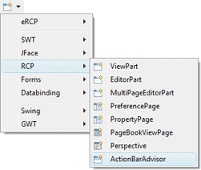
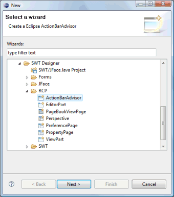
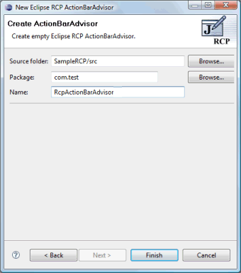
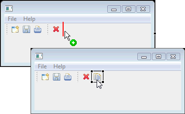
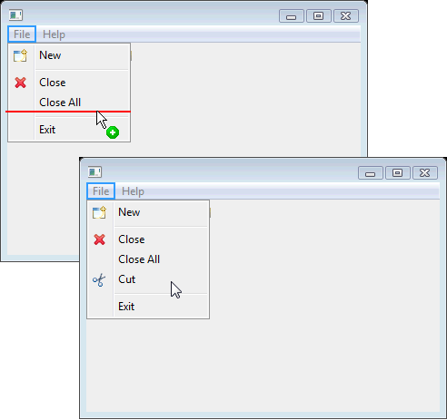
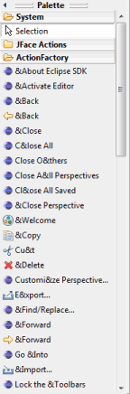
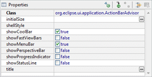

Subclasses of the RCP ActionBarAdvisor class can be created using the RCP ActionBarAdvisor wizard (Eclipse 3.1 or above). The wizard can be selected from the drop down Designer wizard menu or from the Eclipse New wizard.To use the wizard, select the project source folder and package to contain the class. Then enter the class name and editor name and hit the Finish button.
 
The wizard generates the following code.
- import org.eclipse.jface.action.ICoolBarManager;
import org.eclipse.jface.action.IMenuManager;
import org.eclipse.ui.IWorkbenchWindow;
import org.eclipse.ui.application.ActionBarAdvisor;
import org.eclipse.ui.application.IActionBarConfigurer;
public class RcpActionBarAdvisor extends ActionBarAdvisor {
public RcpActionBarAdvisor(IActionBarConfigurer configurer) {
super(configurer);
}
protected void makeActions(IWorkbenchWindow window) {
}
protected void fillCoolBar(ICoolBarManager coolBar) {
}
protected void fillMenuBar(IMenuManager menuBar) {
}
}
ActionBarAdvisors use their own unique palette. The first palette category, JFace Actions, contains a list of all of the actions defined in the local plugin.xml file as well as commands to create new actions, menu managers and toolbar managers. The ActionFactory category contains common actions frequently used in RCP applications.

Tool bars and actions may be dragged and dropped on the Coolbar within the design area. Actions and separators may also be dragged to the menubar.

New actions may be created using the New command, and existing actions may be added using the External command. New actions are created as inner classes of the current class and are automatically added to the palette for easy access. Any existing actions may be deleted using the Delete key. Selecting an action allows you to edit its icons, label and tool tip text within the property pane.
The toolbar is live and actions may be dropped on it. Actions and separators may be dragged from the palette and dropped on the toolbar. Toolbar actions may be rearranged using drag/drop and deleted using the Delete key.
The menubar is also live and actions may be dropped on it. Actions, separators and menu managers may be dragged from the palette and dropped into the menu. Menus may be rearranged using drag/drop and deleted using the Delete key.

The ActionFactory category is prepopulated with all of the actions defined in the Eclipse ActionFactory class.

When the ActionBarAdvisor itself is selected in the property pane, properties for its associated WorkbenchWindowAdvisor class are shown.

- public void preWindowOpen() {
IWorkbenchWindowConfigurer configurer = getWindowConfigurer();
configurer.setTitle("Sample RCP App");
configurer.setShowFastViewBars(true);
configurer.setInitialSize(new Point(200, 200));
configurer.setShowCoolBar(true);
configurer.setShowStatusLine(false);
}